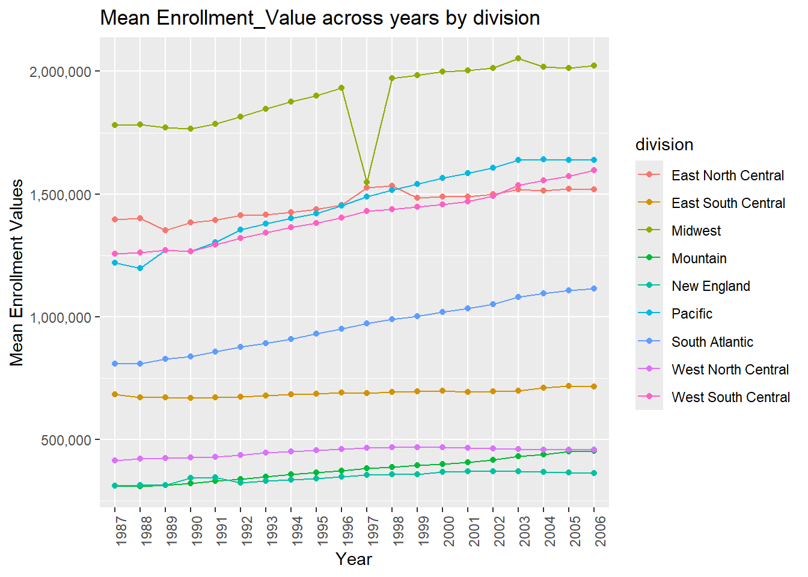
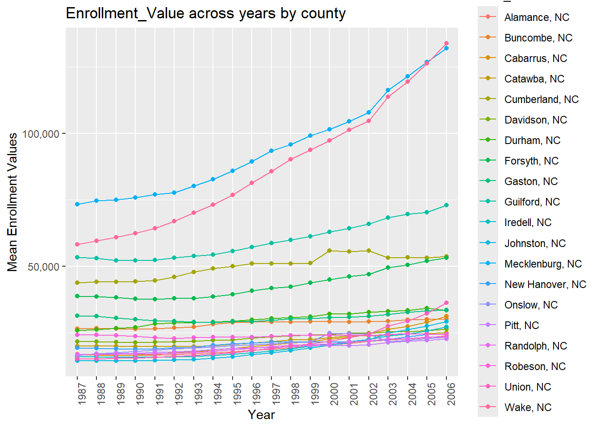
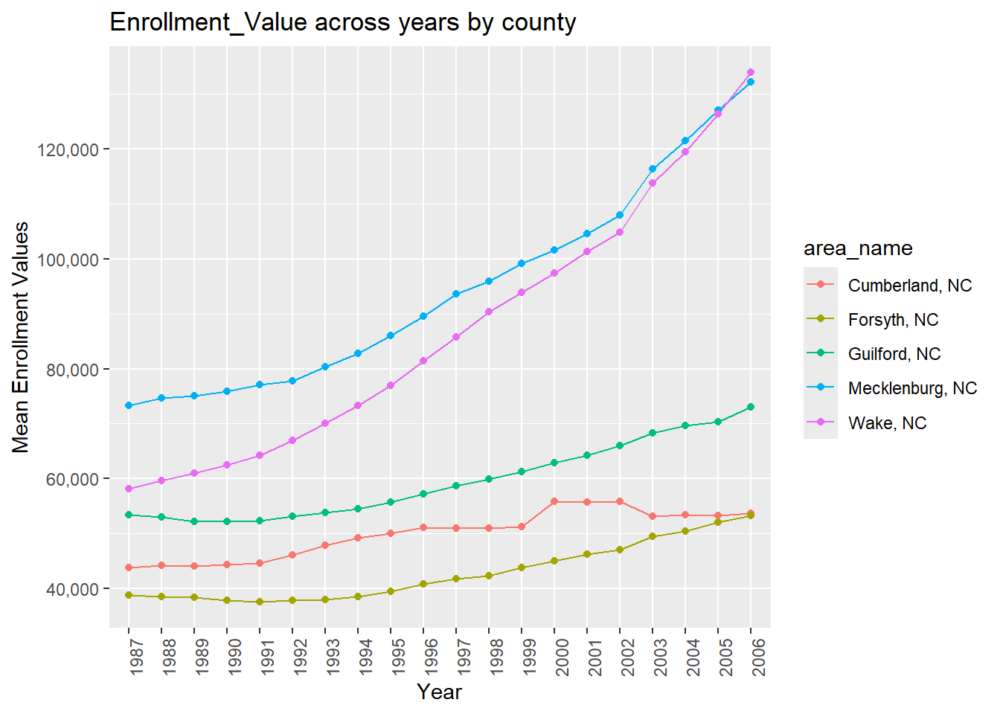
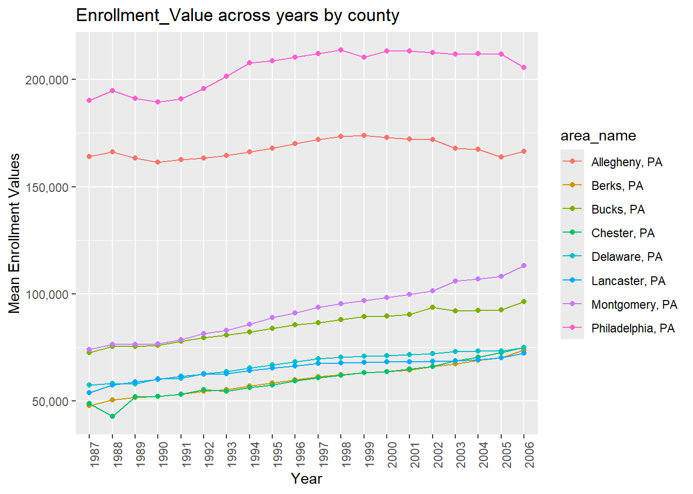
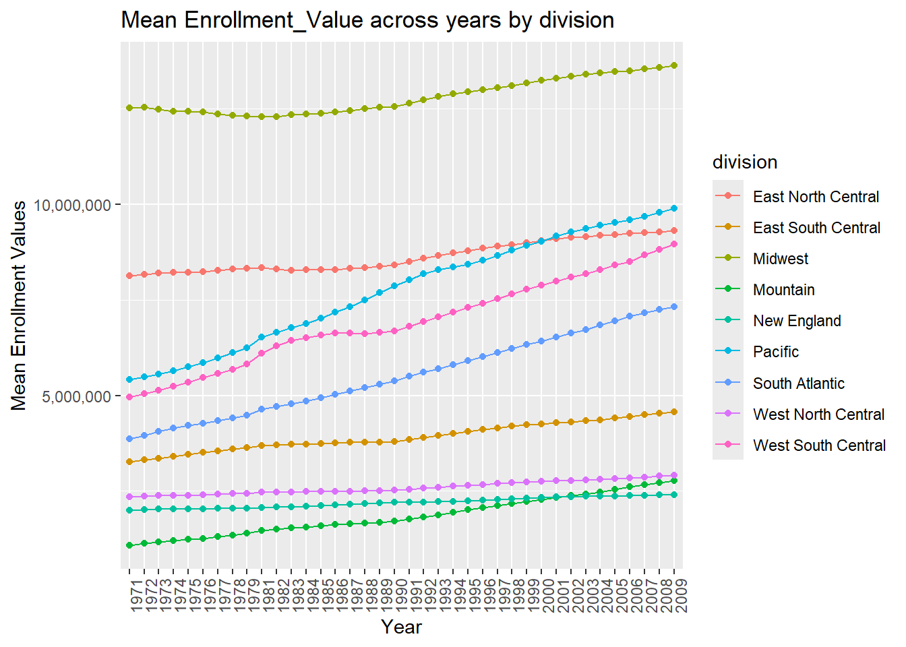
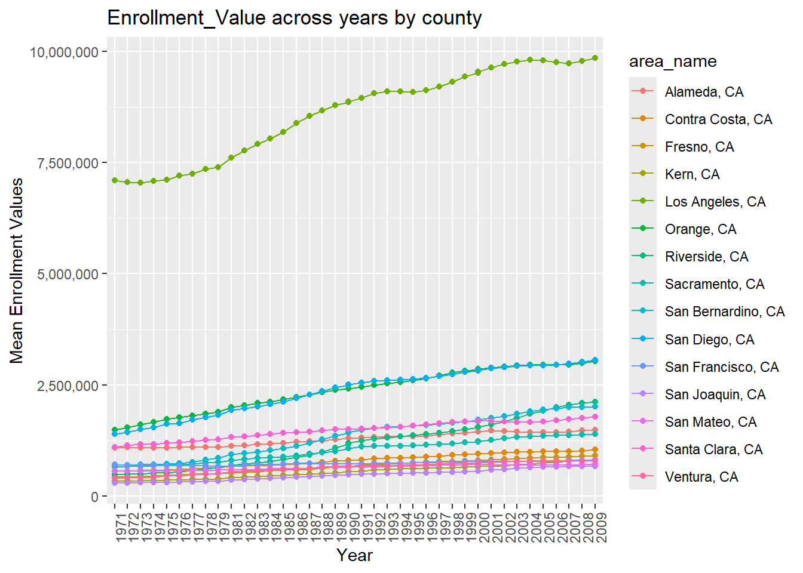
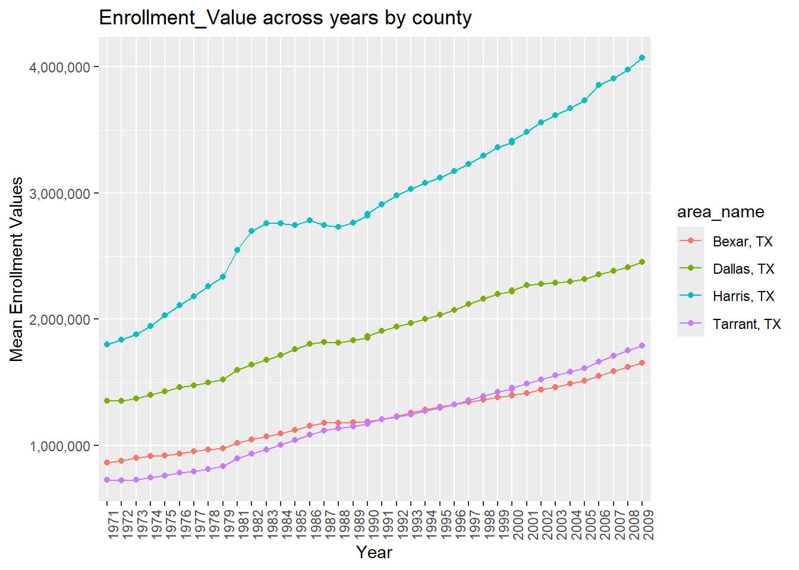
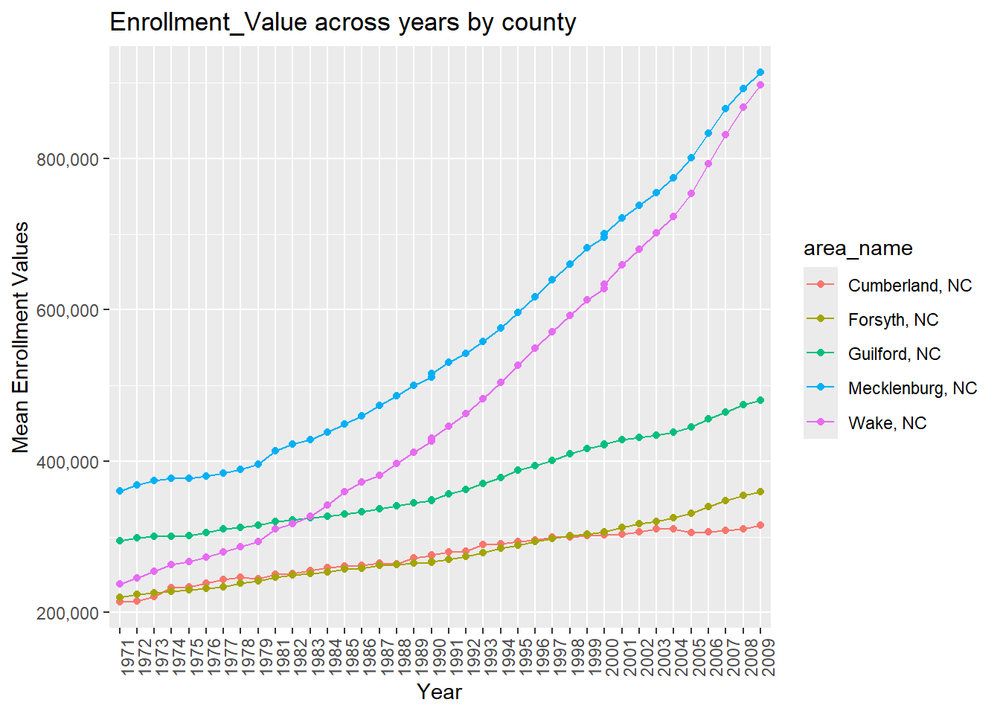
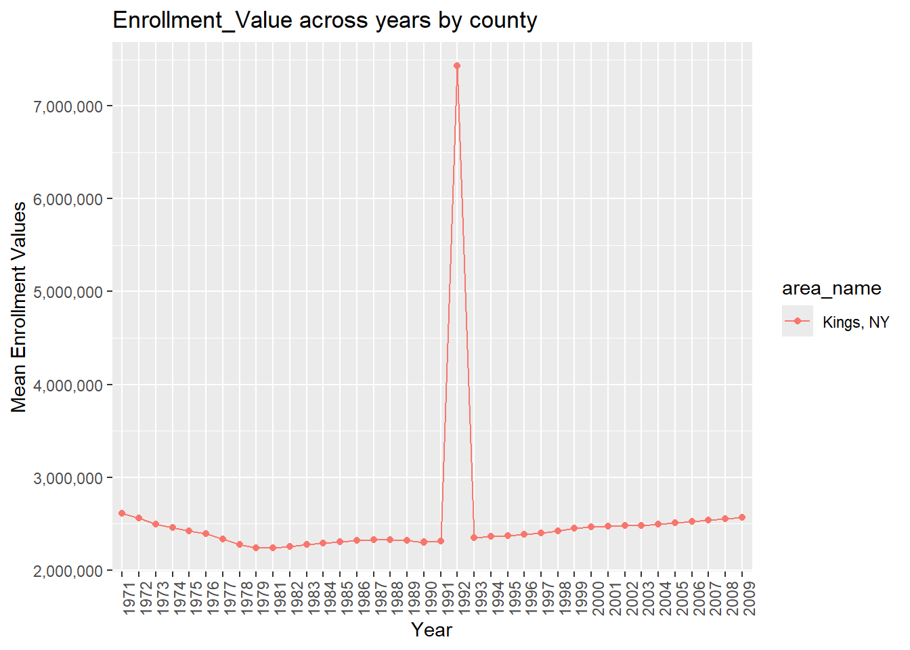

require(tidyverse)
require(rlang)
options(readr.show_col_types = FALSE)Data Manipulation Demonstration: Manual and Functional
The Census Bureau’s Statistical Compendia Program collected geographical-based educational data that we aim to make useful. However, this data requires wrangling first. This demonstration will include a step-by-step explanation of the manual approach to formatting a single dataset into a useful set of tibbles for analysis. Next, I will explain a function-based approach that combines many elements of the manual method, making it easier to upload, wrangle, combine, and analyze two or more datasets. Finally, I will demonstrate how to use all the explained code to transition from raw comma-separated values to rendered ggplots.
Data Processing – The Practicable Approach
#Read-in a comma-separated values dataset.
EDU01a <- read_csv("https://www4.stat.ncsu.edu/~online/datasets/EDU01a.csv")
EDU01a# A tibble: 3,198 × 42
Area_name STCOU EDU010187F EDU010187D EDU010187N1 EDU010187N2 EDU010188F
<chr> <chr> <dbl> <dbl> <chr> <chr> <dbl>
1 UNITED STATES 00000 0 40024299 0000 0000 0
2 ALABAMA 01000 0 733735 0000 0000 0
3 Autauga, AL 01001 0 6829 0000 0000 0
4 Baldwin, AL 01003 0 16417 0000 0000 0
5 Barbour, AL 01005 0 5071 0000 0000 0
6 Bibb, AL 01007 0 3557 0000 0000 0
7 Blount, AL 01009 0 7319 0000 0000 0
8 Bullock, AL 01011 0 2014 0000 0000 0
9 Butler, AL 01013 0 4640 0000 0000 0
10 Calhoun, AL 01015 0 20939 0000 0000 0
# ℹ 3,188 more rows
# ℹ 35 more variables: EDU010188D <dbl>, EDU010188N1 <chr>, EDU010188N2 <chr>,
# EDU010189F <dbl>, EDU010189D <dbl>, EDU010189N1 <chr>, EDU010189N2 <chr>,
# EDU010190F <dbl>, EDU010190D <dbl>, EDU010190N1 <chr>, EDU010190N2 <chr>,
# EDU010191F <dbl>, EDU010191D <dbl>, EDU010191N1 <chr>, EDU010191N2 <chr>,
# EDU010192F <dbl>, EDU010192D <dbl>, EDU010192N1 <chr>, EDU010192N2 <chr>,
# EDU010193F <dbl>, EDU010193D <dbl>, EDU010193N1 <chr>, EDU010193N2 <chr>, …We need data. The first order of business is to read a file into the R environment. A call to read_csv from the readr package and a URL pointing to a comma-separated value (CSV) file will produce our first dataset. For now, I assigned the data to an object using the original file name.
#Select specific columns of interest from the dataset.
My_EDU01a <- EDU01a |>
select("area_name" = Area_name, STCOU, ends_with("D"))
My_EDU01a# A tibble: 3,198 × 12
area_name STCOU EDU010187D EDU010188D EDU010189D EDU010190D EDU010191D
<chr> <chr> <dbl> <dbl> <dbl> <dbl> <dbl>
1 UNITED STATES 00000 40024299 39967624 40317775 40737600 41385442
2 ALABAMA 01000 733735 728234 730048 728252 725541
3 Autauga, AL 01001 6829 6900 6920 6847 7008
4 Baldwin, AL 01003 16417 16465 16799 17054 17479
5 Barbour, AL 01005 5071 5098 5068 5156 5173
6 Bibb, AL 01007 3557 3508 3571 3621 3652
7 Blount, AL 01009 7319 7223 7205 7209 7155
8 Bullock, AL 01011 2014 1980 1985 1983 1985
9 Butler, AL 01013 4640 4582 4610 4591 4544
10 Calhoun, AL 01015 20939 20923 20907 20849 20768
# ℹ 3,188 more rows
# ℹ 5 more variables: EDU010192D <dbl>, EDU010193D <dbl>, EDU010194D <dbl>,
# EDU010195D <dbl>, EDU010196D <dbl>Whenever I alter a dataset for the first time I rename the object indicating that the dataset I am now working with is not the original. Besides providing clarity on what the object is, renaming is also helpful for when a mistake is made. I do not have to read in the entire dataset again using a readr package. The original is already in the R environment so I simply overwrite the copy with the original and start over. With a new object named, a call to the select() function in the tidyverse narrows down the columns I am interested in. The Area_name column is lower-cased to area_name, STCOU remains unchanged, and I use the ends_with() function to select all columns with headers ending in the letter “D”.
#Convert the data to longer formatting.
My_EDU01a <- My_EDU01a |>
pivot_longer(
cols = ends_with("D"),
names_to = "Item_ID",
values_to = "Enrollment_Value")
My_EDU01a# A tibble: 31,980 × 4
area_name STCOU Item_ID Enrollment_Value
<chr> <chr> <chr> <dbl>
1 UNITED STATES 00000 EDU010187D 40024299
2 UNITED STATES 00000 EDU010188D 39967624
3 UNITED STATES 00000 EDU010189D 40317775
4 UNITED STATES 00000 EDU010190D 40737600
5 UNITED STATES 00000 EDU010191D 41385442
6 UNITED STATES 00000 EDU010192D 42088151
7 UNITED STATES 00000 EDU010193D 42724710
8 UNITED STATES 00000 EDU010194D 43369917
9 UNITED STATES 00000 EDU010195D 43993459
10 UNITED STATES 00000 EDU010196D 44715737
# ℹ 31,970 more rowsThe data is in a wide format, making it difficult to read. A call to pivot_longer() collapses all of the columns ending in “D” into a single column called Item_ID. Values in this dataset are assigned to a new column header called Enrollment_Value.
#Parse Strings into year and measurement types.
My_EDU01a <- My_EDU01a |>
mutate(year = case_when(
substr(Item_ID, 8, 9) > 24 ~ paste0("19", substr(Item_ID, 8,9)),
substr(Item_ID, 8, 9) <= 24 ~ paste0("20", substr(Item_ID, 8,9))),
measure = substr(Item_ID, 1, 7))
My_EDU01a# A tibble: 31,980 × 6
area_name STCOU Item_ID Enrollment_Value year measure
<chr> <chr> <chr> <dbl> <chr> <chr>
1 UNITED STATES 00000 EDU010187D 40024299 1987 EDU0101
2 UNITED STATES 00000 EDU010188D 39967624 1988 EDU0101
3 UNITED STATES 00000 EDU010189D 40317775 1989 EDU0101
4 UNITED STATES 00000 EDU010190D 40737600 1990 EDU0101
5 UNITED STATES 00000 EDU010191D 41385442 1991 EDU0101
6 UNITED STATES 00000 EDU010192D 42088151 1992 EDU0101
7 UNITED STATES 00000 EDU010193D 42724710 1993 EDU0101
8 UNITED STATES 00000 EDU010194D 43369917 1994 EDU0101
9 UNITED STATES 00000 EDU010195D 43993459 1995 EDU0101
10 UNITED STATES 00000 EDU010196D 44715737 1996 EDU0101
# ℹ 31,970 more rowsHidden within the Item_ID are two pieces of information that will assist our analysis. The last two numeric values in the ID pertain to the year of the observation, while the first seven alphanumeric characters pertain to a specific type of measure. In this step, the code above extracts both pieces of information using substr() and funnels them into new columns using mutate().
There are two scenarios we need to account for to accurately wrangle our data. The data contains observations with a range of 1980 to 2010; only the last two digits of the year are given. For our data analysis, we need to convert the newly mutated year column from a two-digit year to a four-digit year so we can order it properly on an axis. This requires consideration for the century-spanning date range of the collected data. Using a call to case_when() with a subset of substr(), we can handle each of the scenarios and perform different actions on them based on their values. If the digit is greater than twenty-four, that would indicates that the year the data collected fell between 1980 and 1999 inclusive, as it would have been impossible to collect data from 2080 to 2099–dates which have not yet occurred. Likewise, values less than or equal to twenty-four are attributed to the years 2000 through 2024, since observations from 1900 to 1924 would not be likely based on information on this dataset provided from the Census Bureau and the gap in dates that would be present from 1924 through 1980. Using the paste0() function, a “19” or “20” is added to the front of the two-digit year provided, depending on its value and then loaded into the year column.
The creation of the new column ‘measure’ was straightforward using a simple substr() call and removing the first seven characters from the string. Our mutated data will keep the object name and the dataset altered earlier with filter() is used here with pipes instead of the original from the readr package, thus maintaining continuity.
#From the parameterized version of the EDU table, I have separated out the two tables by county and non-county.
County.Data <- My_EDU01a |> filter(grepl(", [A-Z][A-Z]", area_name))
NonCounty.Data <- My_EDU01a |> filter(!grepl(", [A-Z][A-Z]", area_name))
#Add a classification that identifies the data we are working with. We will lean on this later when combining data.
class(County.Data) <- c("county", class(County.Data))
class(NonCounty.Data) <- c("state", class(NonCounty.Data))
County.Data# A tibble: 31,450 × 6
area_name STCOU Item_ID Enrollment_Value year measure
<chr> <chr> <chr> <dbl> <chr> <chr>
1 Autauga, AL 01001 EDU010187D 6829 1987 EDU0101
2 Autauga, AL 01001 EDU010188D 6900 1988 EDU0101
3 Autauga, AL 01001 EDU010189D 6920 1989 EDU0101
4 Autauga, AL 01001 EDU010190D 6847 1990 EDU0101
5 Autauga, AL 01001 EDU010191D 7008 1991 EDU0101
6 Autauga, AL 01001 EDU010192D 7137 1992 EDU0101
7 Autauga, AL 01001 EDU010193D 7152 1993 EDU0101
8 Autauga, AL 01001 EDU010194D 7381 1994 EDU0101
9 Autauga, AL 01001 EDU010195D 7568 1995 EDU0101
10 Autauga, AL 01001 EDU010196D 7834 1996 EDU0101
# ℹ 31,440 more rowsNonCounty.Data# A tibble: 530 × 6
area_name STCOU Item_ID Enrollment_Value year measure
<chr> <chr> <chr> <dbl> <chr> <chr>
1 UNITED STATES 00000 EDU010187D 40024299 1987 EDU0101
2 UNITED STATES 00000 EDU010188D 39967624 1988 EDU0101
3 UNITED STATES 00000 EDU010189D 40317775 1989 EDU0101
4 UNITED STATES 00000 EDU010190D 40737600 1990 EDU0101
5 UNITED STATES 00000 EDU010191D 41385442 1991 EDU0101
6 UNITED STATES 00000 EDU010192D 42088151 1992 EDU0101
7 UNITED STATES 00000 EDU010193D 42724710 1993 EDU0101
8 UNITED STATES 00000 EDU010194D 43369917 1994 EDU0101
9 UNITED STATES 00000 EDU010195D 43993459 1995 EDU0101
10 UNITED STATES 00000 EDU010196D 44715737 1996 EDU0101
# ℹ 520 more rowsThere is more information to extract. Our datasets can be partitioned based on whether the area_name column contains a county-state abbreviation combination or just a state. Leveraging filter(), grepl(), specific string formatting criteria, and negation logic, the preceding code separates the data into County and NonCounty groupings.
A class is then assigned to the data. This is done because later on in the wrangling steps, both of these tibbles will be placed in a list, and we will want to set the class to “county” or “state” to accurately combine our tibbles based on their unique geographic profiles.
#Create a column in the County dataset that returns State.
County.Data <- County.Data |> mutate(state = substr(area_name, nchar(area_name) - 1, nchar(area_name)))
County.Data# A tibble: 31,450 × 7
area_name STCOU Item_ID Enrollment_Value year measure state
<chr> <chr> <chr> <dbl> <chr> <chr> <chr>
1 Autauga, AL 01001 EDU010187D 6829 1987 EDU0101 AL
2 Autauga, AL 01001 EDU010188D 6900 1988 EDU0101 AL
3 Autauga, AL 01001 EDU010189D 6920 1989 EDU0101 AL
4 Autauga, AL 01001 EDU010190D 6847 1990 EDU0101 AL
5 Autauga, AL 01001 EDU010191D 7008 1991 EDU0101 AL
6 Autauga, AL 01001 EDU010192D 7137 1992 EDU0101 AL
7 Autauga, AL 01001 EDU010193D 7152 1993 EDU0101 AL
8 Autauga, AL 01001 EDU010194D 7381 1994 EDU0101 AL
9 Autauga, AL 01001 EDU010195D 7568 1995 EDU0101 AL
10 Autauga, AL 01001 EDU010196D 7834 1996 EDU0101 AL
# ℹ 31,440 more rowsWhen plotting our data, the function will need a breakdown of county performance by state. For that, we will need a new column that contains just the state abbreviation. Here, mutate() and substr() make quick work of this task. The arguments for substr(a, b, c) to extract are:
a - the character vector
b - the starting position
c - the ending position
The function nchar() returns the number of characters in the string. Using nchar() was necessary because of the varying lengths of each value in the area_name column. One pattern was uniform throughout the datasets: the last two characters of any value in this column denoted the state. In substr(), the first input was the column to be parsed. The second input was the number of characters in the column value minus one character—or in other words, the second-to-last character. The final input was the number of characters in the column value which would cause the substr() to stop at the last character. This approach ensures that the mutation will always extract the last two characters of the column value.
# Create column in the NonCounty dataset that returns division conditionally
NonCounty.Data <- NonCounty.Data |> mutate(division = case_when(
area_name %in% c("CONNECTICUT","MAINE","MASSACHUSETTS","NEW HAMPSHIRE","RHODE ISLAND","VERMONT") ~ "New England",
area_name %in% c("NEW JERSEY","NEW YORK","PENNSYLVANIA") ~ "Midwest",
area_name %in% c("ILLINOIS","INDIANA","MICHIGAN","OHIO","WISCONSIN") ~ "East North Central",
area_name %in% c("IOWA","KANSAS","MINNESOTA","MISSOURI","NEBRASKA","NORTH DAKOTA","SOUTH DAKOTA") ~ "West North Central",
area_name %in% c("DELAWARE","FLORIDA","GEORGIA","MARYLAND","NORTH CAROLINA","SOUTH CAROLINA","VIRGINIA","WASHINGTON, D.C.","WEST VIRGINIA") ~ "South Atlantic",
area_name %in% c("ALABAMA","KENTUCKY","MISSISSIPPI","TENNESSEE") ~ "East South Central",
area_name %in% c("ARKANSAS","LOUISIANA","OKLAHOMA","TEXAS") ~ "West South Central",
area_name %in% c("ARIZONA","COLORADO","IDAHO","MONTANA","NEVADA","NEW MEXICO","UTAH","WYOMING") ~ "Mountain",
area_name %in% c("ALASKA","CALIFORNIA","HAWAII","OREGON","WASHINGTON") ~ "Pacific",
TRUE ~ "ERROR"
))
NonCounty.Data# A tibble: 530 × 7
area_name STCOU Item_ID Enrollment_Value year measure division
<chr> <chr> <chr> <dbl> <chr> <chr> <chr>
1 UNITED STATES 00000 EDU010187D 40024299 1987 EDU0101 ERROR
2 UNITED STATES 00000 EDU010188D 39967624 1988 EDU0101 ERROR
3 UNITED STATES 00000 EDU010189D 40317775 1989 EDU0101 ERROR
4 UNITED STATES 00000 EDU010190D 40737600 1990 EDU0101 ERROR
5 UNITED STATES 00000 EDU010191D 41385442 1991 EDU0101 ERROR
6 UNITED STATES 00000 EDU010192D 42088151 1992 EDU0101 ERROR
7 UNITED STATES 00000 EDU010193D 42724710 1993 EDU0101 ERROR
8 UNITED STATES 00000 EDU010194D 43369917 1994 EDU0101 ERROR
9 UNITED STATES 00000 EDU010195D 43993459 1995 EDU0101 ERROR
10 UNITED STATES 00000 EDU010196D 44715737 1996 EDU0101 ERROR
# ℹ 520 more rowsThe Non-County data can be broken down into different regions, called divisions, by the Census Bureau. A new column is needed to partition each group of states into their respective divisions. Creating new columns requires a call to mutate(). Using case_when(), a conditional check on the area_name column looks at a state and, if it is in a specified vector, assigns it to the appropriate division using the tilde (~). This involves a considerable amount of manual typing, but there are few alternatives for assigning each observation to its proper division. For cases when an area_name observation is not one of the states grouped into a division, the column value is assigned “ERROR”.
The data is now organized, relevant, and ready to be analyzed. In scenarios where we might have multiple datasets to process or where we need to perform this action on many datasets repeatedly, avoiding manual renaming of readr inputs and writing custom code is essential for saving time. Next, I will demonstrate how to address such situations. All the programming I have shown will be nested into a function which you can call using a URL. Additionally, I will introduce a new function that combines these listed tibbles based on their geographical profiles.
Data Processing and Combining Data – a Practical Approach
#This function selects and elongates our data.
MyFunct0102 <- function(dataset_select_pivot, Enrollment_Values = Enrollment_Values) {
dataset_select_pivot %>%
select("area_name" = Area_name, STCOU, ends_with("D")) %>%
pivot_longer(
cols = ends_with("D"),
names_to = "Item_ID",
values_to = "Enrollment_Value")
}#This function creates a new column for 'year' and 'measure'.
MyFunct03 <- function(dataset_mutate) {
dataset_mutate %>%
mutate(year = case_when(
substr(Item_ID, 8, 9) > 24 ~ paste0("19", substr(Item_ID, 8,9)),
substr(Item_ID, 8, 9) <= 24 ~ paste0("20", substr(Item_ID, 8,9))),
measure = substr(Item_ID, 1, 7))
}#This function creates a new column for state abbreviation inside the County Data tibble.
MyFunct05 <- function(County_Data_Mutate){
County_Data <- County_Data_Mutate |> mutate(state = substr(area_name, nchar(area_name) - 1, nchar(area_name)))
}#This function creates a new column for divisional descriptors inside the NonCounty Data tibble.
MyFunct06 <- function(NonCounty_Data_Mutate){
NonCounty_Data <- NonCounty_Data_Mutate |> mutate(division = case_when(
area_name %in% c("CONNECTICUT","MAINE","MASSACHUSETTS","NEW HAMPSHIRE","RHODE ISLAND","VERMONT") ~ "New England",
area_name %in% c("NEW JERSEY","NEW YORK","PENNSYLVANIA") ~ "Midwest",
area_name %in% c("ILLINOIS","INDIANA","MICHIGAN","OHIO","WISCONSIN") ~ "East North Central",
area_name %in% c("IOWA","KANSAS","MINNESOTA","MISSOURI","NEBRASKA","NORTH DAKOTA","SOUTH DAKOTA") ~ "West North Central",
area_name %in% c("DELAWARE","FLORIDA","GEORGIA","MARYLAND","NORTH CAROLINA","SOUTH CAROLINA","VIRGINIA","WASHINGTON, D.C.","WEST VIRGINIA") ~ "South Atlantic",
area_name %in% c("ALABAMA","KENTUCKY","MISSISSIPPI","TENNESSEE") ~ "East South Central",
area_name %in% c("ARKANSAS","LOUISIANA","OKLAHOMA","TEXAS") ~ "West South Central",
area_name %in% c("ARIZONA","COLORADO","IDAHO","MONTANA","NEVADA","NEW MEXICO","UTAH","WYOMING") ~ "Mountain",
area_name %in% c("ALASKA","CALIFORNIA","HAWAII","OREGON","WASHINGTON") ~ "Pacific",
TRUE ~ "ERROR"))
}#This function separates our data into County vs. NonCounty, then it calls on the functions above that mutate a new column for state in the county tibble or a division column in the state tibble. Finally, it adds class to their respective tibble to make calling on it while inside a list easy.
MyFunct04 <- function(dataset_partition) {
#Step 4--Separate the data into its two parts--County and NonCounty
County_Data <- dataset_partition |> filter(grepl(", [A-Z][A-Z]", area_name))
NonCounty_Data <- dataset_partition |> filter(!grepl(", [A-Z][A-Z]", area_name))
#Function Call for CountyData
County_Data <- MyFunct05(County_Data)
class(County_Data) <- c("county", class(County_Data))
#Function Call for NonCountyData
NonCounty_Data <- MyFunct06(NonCounty_Data)
class(NonCounty_Data) <- c("state", class(NonCounty_Data))
return(list(County_Data = County_Data, NonCounty_Data = NonCounty_Data))
}Each of the manual steps demonstrated earlier are now encapsulated into a function. Each function performs specific actions on the data. When called in the appropriate order, these functions execute the same data wrangling processes we performed earlier, but now within a single, convenient function.
#The Wrapper Function
Split_Data_Along_Geography <- function(url, Enrollment_Value = "Enrollment_Value") {
if (!str_ends(url, ".csv")) {
stop("Invalid URL format. Please provide a valid URL ending in '.csv") #Check satisfying conditions for running the function.
}
result <- as_tibble(read_csv(url)) %>% #Reads in data.
MyFunct0102 %>% #Selects/Pivots Data
MyFunct03 %>% #Creates new columns for measuring and date=year
MyFunct04 #Performs the split, mutate and class call on the dataset
}This wrapper function is designed to “wrap” around all other functions, ensuring they run in the required order. User of the function will provide a URL argument and an Enrollment_Value input. The second input is default on the column labeled Enrollment_Value. The first part of this function checks if the loaded file is a comma-separated values file (CSV). With increased automation, I decided to add a stop call to prevent unnecessary errors. If the supplied link does not end in “.csv”, the function terminates and issues a warning. Assuming an acceptable link is provided, the called function automatically reads the CSV from the URL, applies each function in the specified order, and stores the resulting data as result.
#Call your data... Test to see if the URLs produce the intended outcome.
result_a <- Split_Data_Along_Geography("https://www4.stat.ncsu.edu/~online/datasets/EDU01a.csv", Enrollment_Value)
result_b <- Split_Data_Along_Geography("https://www4.stat.ncsu.edu/~online/datasets/EDU01b.csv", Enrollment_Value)
result_a; result_b;$County_Data
# A tibble: 31,450 × 7
area_name STCOU Item_ID Enrollment_Value year measure state
<chr> <chr> <chr> <dbl> <chr> <chr> <chr>
1 Autauga, AL 01001 EDU010187D 6829 1987 EDU0101 AL
2 Autauga, AL 01001 EDU010188D 6900 1988 EDU0101 AL
3 Autauga, AL 01001 EDU010189D 6920 1989 EDU0101 AL
4 Autauga, AL 01001 EDU010190D 6847 1990 EDU0101 AL
5 Autauga, AL 01001 EDU010191D 7008 1991 EDU0101 AL
6 Autauga, AL 01001 EDU010192D 7137 1992 EDU0101 AL
7 Autauga, AL 01001 EDU010193D 7152 1993 EDU0101 AL
8 Autauga, AL 01001 EDU010194D 7381 1994 EDU0101 AL
9 Autauga, AL 01001 EDU010195D 7568 1995 EDU0101 AL
10 Autauga, AL 01001 EDU010196D 7834 1996 EDU0101 AL
# ℹ 31,440 more rows
$NonCounty_Data
# A tibble: 530 × 7
area_name STCOU Item_ID Enrollment_Value year measure division
<chr> <chr> <chr> <dbl> <chr> <chr> <chr>
1 UNITED STATES 00000 EDU010187D 40024299 1987 EDU0101 ERROR
2 UNITED STATES 00000 EDU010188D 39967624 1988 EDU0101 ERROR
3 UNITED STATES 00000 EDU010189D 40317775 1989 EDU0101 ERROR
4 UNITED STATES 00000 EDU010190D 40737600 1990 EDU0101 ERROR
5 UNITED STATES 00000 EDU010191D 41385442 1991 EDU0101 ERROR
6 UNITED STATES 00000 EDU010192D 42088151 1992 EDU0101 ERROR
7 UNITED STATES 00000 EDU010193D 42724710 1993 EDU0101 ERROR
8 UNITED STATES 00000 EDU010194D 43369917 1994 EDU0101 ERROR
9 UNITED STATES 00000 EDU010195D 43993459 1995 EDU0101 ERROR
10 UNITED STATES 00000 EDU010196D 44715737 1996 EDU0101 ERROR
# ℹ 520 more rows$County_Data
# A tibble: 31,450 × 7
area_name STCOU Item_ID Enrollment_Value year measure state
<chr> <chr> <chr> <dbl> <chr> <chr> <chr>
1 Autauga, AL 01001 EDU010197D 8099 1997 EDU0101 AL
2 Autauga, AL 01001 EDU010198D 8211 1998 EDU0101 AL
3 Autauga, AL 01001 EDU010199D 8489 1999 EDU0101 AL
4 Autauga, AL 01001 EDU010200D 8912 2000 EDU0102 AL
5 Autauga, AL 01001 EDU010201D 8626 2001 EDU0102 AL
6 Autauga, AL 01001 EDU010202D 8762 2002 EDU0102 AL
7 Autauga, AL 01001 EDU015203D 9105 2003 EDU0152 AL
8 Autauga, AL 01001 EDU015204D 9200 2004 EDU0152 AL
9 Autauga, AL 01001 EDU015205D 9559 2005 EDU0152 AL
10 Autauga, AL 01001 EDU015206D 9652 2006 EDU0152 AL
# ℹ 31,440 more rows
$NonCounty_Data
# A tibble: 530 × 7
area_name STCOU Item_ID Enrollment_Value year measure division
<chr> <chr> <chr> <dbl> <chr> <chr> <chr>
1 UNITED STATES 00000 EDU010197D 44534459 1997 EDU0101 ERROR
2 UNITED STATES 00000 EDU010198D 46245814 1998 EDU0101 ERROR
3 UNITED STATES 00000 EDU010199D 46368903 1999 EDU0101 ERROR
4 UNITED STATES 00000 EDU010200D 46818690 2000 EDU0102 ERROR
5 UNITED STATES 00000 EDU010201D 47127066 2001 EDU0102 ERROR
6 UNITED STATES 00000 EDU010202D 47606570 2002 EDU0102 ERROR
7 UNITED STATES 00000 EDU015203D 48506317 2003 EDU0152 ERROR
8 UNITED STATES 00000 EDU015204D 48693287 2004 EDU0152 ERROR
9 UNITED STATES 00000 EDU015205D 48978555 2005 EDU0152 ERROR
10 UNITED STATES 00000 EDU015206D 49140702 2006 EDU0152 ERROR
# ℹ 520 more rows#Combine your data... This function takes the results of two or more URLs and produces a list of combined Tibbles separated by County and NonCounty.
combine_results <- function(...) {
results <- list(...)
combined_county <- results %>%
purrr::map(~ .x$County_Data) %>%
purrr::reduce(dplyr::bind_rows)
combined_NonCounty <- results %>%
purrr::map(~ .x$NonCounty_Data) %>%
purrr::reduce(dplyr::bind_rows)
return(list(combined_county, combined_NonCounty))
}
combine_results(result_a, result_b)[[1]]
# A tibble: 62,900 × 7
area_name STCOU Item_ID Enrollment_Value year measure state
<chr> <chr> <chr> <dbl> <chr> <chr> <chr>
1 Autauga, AL 01001 EDU010187D 6829 1987 EDU0101 AL
2 Autauga, AL 01001 EDU010188D 6900 1988 EDU0101 AL
3 Autauga, AL 01001 EDU010189D 6920 1989 EDU0101 AL
4 Autauga, AL 01001 EDU010190D 6847 1990 EDU0101 AL
5 Autauga, AL 01001 EDU010191D 7008 1991 EDU0101 AL
6 Autauga, AL 01001 EDU010192D 7137 1992 EDU0101 AL
7 Autauga, AL 01001 EDU010193D 7152 1993 EDU0101 AL
8 Autauga, AL 01001 EDU010194D 7381 1994 EDU0101 AL
9 Autauga, AL 01001 EDU010195D 7568 1995 EDU0101 AL
10 Autauga, AL 01001 EDU010196D 7834 1996 EDU0101 AL
# ℹ 62,890 more rows
[[2]]
# A tibble: 1,060 × 7
area_name STCOU Item_ID Enrollment_Value year measure division
<chr> <chr> <chr> <dbl> <chr> <chr> <chr>
1 UNITED STATES 00000 EDU010187D 40024299 1987 EDU0101 ERROR
2 UNITED STATES 00000 EDU010188D 39967624 1988 EDU0101 ERROR
3 UNITED STATES 00000 EDU010189D 40317775 1989 EDU0101 ERROR
4 UNITED STATES 00000 EDU010190D 40737600 1990 EDU0101 ERROR
5 UNITED STATES 00000 EDU010191D 41385442 1991 EDU0101 ERROR
6 UNITED STATES 00000 EDU010192D 42088151 1992 EDU0101 ERROR
7 UNITED STATES 00000 EDU010193D 42724710 1993 EDU0101 ERROR
8 UNITED STATES 00000 EDU010194D 43369917 1994 EDU0101 ERROR
9 UNITED STATES 00000 EDU010195D 43993459 1995 EDU0101 ERROR
10 UNITED STATES 00000 EDU010196D 44715737 1996 EDU0101 ERROR
# ℹ 1,050 more rowsTesting out the wrapper function, I called the function with the appropriate .csv file and default arguments, producing two lists, each containing a county and state tibble. Next, I used the combine_results() function with these lists as arguments. This function combines counties with counties and states with states across the results.
The data is ready for analysis, whether manually or through functions, and we can process many tibbles quickly if more data is needed. It is challenging to find insights in a tibble though, especially one so large. Rather than pour over the tibble looking through thousands of rows for interesting trends, a visual aide would be a better place to start your search. In the final demonstration, two new functions will be introduced; a unique plotting function for each one of the county and state datasets.
Application: Turning Wrangled Data into Graphicial Insight
#Plotting function for state data
plot.state <- function(df.state, var_name = "Enrollment_Value") {
# Filter out rows where Division is "ERROR" and compute mean enrollment of the input var_name, all by division and year.
df_filtered <- df.state %>%
filter(division != "ERROR") %>%
group_by(division, year) %>%
summarize(mean_enrollment = mean(get(var_name), na.rm = TRUE))
# Plot the input
ggplot(df_filtered, aes(x = year, y = mean_enrollment, color = division))+
geom_line(aes(group = division)) +
geom_point() +
labs(x = "Year", y = "Mean Enrollment Values") +
ggtitle(paste("Mean", var_name, "across years by division")) +
scale_y_continuous(labels = scales::comma) +
theme(axis.text.x = element_text(angle = 90))
}The plot.state function accepts a dataframe classified as state and a var_name used to plot the mean. The function code is divided into two parts: a miniature wrangling step and the ggplot call.
Recall that we assigned area_name values not listed as states as “ERROR”. In the wrangling steps, the function eliminates all “ERROR” values from consideration. Then, it groups the data by division and year. Since we are interested in the performance of divisions over time, both are grouped in the group_by() call. Finally, a call to summarize calculates the mean Enrollment_Value by default. The resulting data is assigned to the object df_filtered, which is prepared for use in the ggplot call.
Inside ggplot, a simple call uses the wrangled object df_filtered. The aesthetics include years along the x-axis and mean Enrollment_Values along the y-axis. Adding color within aes() acts as a grouping mechanism, assigning unique colors to each division in the legend and geom layers. Towards the end of the ggplot call, there are administrative options for better presentation: appropriate labels and titles, an option to prevent scientific notation in y-axis values, and a theme adjustment to orient labels vertically for improved readability.
plot.county <- function(data, state = "NC", var_name = "Enrollment_Value", top_or_bottom = "top", n = 5) {
# Filter the data to only include data from the specified state
state_data <- data %>% filter(state == !!state)
# Calculate the overall mean of the specified statistic for each area_name
mean_data <- state_data %>%
group_by(area_name) %>%
summarise(mean_value = mean(get(var_name), na.rm = TRUE))
# Sort the mean values from largest to smallest if 'top' is specified, or smallest to largest if 'bottom' is specified
if (top_or_bottom == "top") {
sorted_data <- mean_data %>% arrange(desc(mean_value))
} else {
sorted_data <- mean_data %>% arrange(mean_value)
}
## Obtain the top or bottom n area_names
selected_areas <- sorted_data %>% slice_head(n = n) %>% pull(area_name)
# Filter the original data to only include the selected area_names
plot_data <- state_data %>% filter(area_name %in% selected_areas)
ggplot(plot_data, aes(x = year, y = get(var_name), color = area_name)) +
geom_line(aes(group = area_name)) +
geom_point() +
labs(x = "Year", y = "Mean Enrollment Values") +
ggtitle(paste(var_name, "across years by county")) +
scale_y_continuous(labels = scales::comma) +
theme(axis.text.x = element_text(angle = 90))
}
#plot.county(Frames_Joined_On_Geo[[1]], state = "FL", var_name = "Enrollment_Value", top_or_bottom = "top", n = 9)When plotting the county data, we are interested in the Enrollment_Value statistic by year and state. The function is built for inputs of higher or lower performing counties. The function also allows the user to specify the number of counties from top or bottom to view. These parameters are all input arguments that the function accepts. Running plot.county should output a customizable line chart. Here is how you build it.
I can best describe what this function is doing by the order with which the functions acts on our data. The function first filters the county data to show only the state specified in the function input. There were errors and warning popping up in console when creating this function with the state object so I turned to the R package rlang and the !! operator to correctly filter my rows. The filtered data is saved to the object state_data.
Next, the overall mean is calculated. I used tidyverse piping and syntax on state_data to obtain the mean of the var_name. Enrollment_Value was the var_name in all cases, and a list of state and mean_value was saved to the object mean_data.
The function needs to order the mean_data by the mean_value column based on the input for the top_or_bottom variable. A conditional if statement was added to handle each of the two acceptable cases, sorting in ascending or descending order accordingly. The mean_data, now sorted, is assigned to the new object sorted_data.
We are not interested in plotting these overall means but rather the Enrollment_Value statistics of the top or bottom performing counties by their overall means. In this step, the sorted data is first checked against the n input in the function, and only the relevant areas are extracted. The result is a list of top or bottom performing counties, with the quantity specified in the inputs, all assigned to the object selected_areas.
Before plotting, we extract the areas in selected_areas from the initial state_data and assign this new set to plot_data. This set should contain exactly what we need to plot: a list of counties with n top or bottom performers and their Enrollment_Values.
This ggplot is nearly identical to the plot for state data. The only differences are the title and the plotting of Enrollment_Values statistics instead of the mean values in the state plot. We now have beautiful, customizable plots which provide a summary look into our tibbles. Next up is a stress test our code. Input values will vary, so too should our plots.
Stress Testing the Programming Code
Run your data processing function on the two enrollment URLs given previously, specifying an appropriate name for the enrollment data column.
#READ: EDU01a.csv file.
EDU01a <- read_csv("https://www4.stat.ncsu.edu/~online/datasets/EDU01a.csv")
#Combine Step one, step two and step three into one task.
My_EDU01a <- EDU01a |>
select("area_name" = Area_name, STCOU, ends_with("D")) |>
pivot_longer(
cols = ends_with("D"),
names_to = "Item_ID",
values_to = "Enrollment_Value") |> #Specification of the enrollment values data column
mutate(year = case_when(
substr(Item_ID, 8, 9) > 24 ~ paste0("19", substr(Item_ID, 8,9)),
substr(Item_ID, 8, 9) <= 24 ~ paste0("20", substr(Item_ID, 8,9))),
measure = substr(Item_ID, 1, 7))
#Assigned data based on area_name column values.
County.Data <- My_EDU01a |> filter(grepl(", [A-Z][A-Z]", area_name))
NonCounty.Data <- My_EDU01a |> filter(!grepl(", [A-Z][A-Z]", area_name))
#Add a column that identifies the classification of data we are working with.
class(County.Data) <- c("county", class(County.Data))
class(NonCounty.Data) <- c("state", class(NonCounty.Data))
#Create column with state abbreviation
County.Data <- County.Data |> mutate(state = substr(area_name, nchar(area_name) - 1, nchar(area_name)))
#Create column in the NonCounty dataset that returns division conditionally
NonCounty.Data <- NonCounty.Data |> mutate(division = case_when(
area_name %in% c("CONNECTICUT","MAINE","MASSACHUSETTS","NEW HAMPSHIRE","RHODE ISLAND","VERMONT") ~ "New England",
area_name %in% c("NEW JERSEY","NEW YORK","PENNSYLVANIA") ~ "Midwest",
area_name %in% c("ILLINOIS","INDIANA","MICHIGAN","OHIO","WISCONSIN") ~ "East North Central",
area_name %in% c("IOWA","KANSAS","MINNESOTA","MISSOURI","NEBRASKA","NORTH DAKOTA","SOUTH DAKOTA") ~ "West North Central",
area_name %in% c("DELAWARE","FLORIDA","GEORGIA","MARYLAND","NORTH CAROLINA","SOUTH CAROLINA","VIRGINIA","WASHINGTON, D.C.","WEST VIRGINIA") ~ "South Atlantic",
area_name %in% c("ALABAMA","KENTUCKY","MISSISSIPPI","TENNESSEE") ~ "East South Central",
area_name %in% c("ARKANSAS","LOUISIANA","OKLAHOMA","TEXAS") ~ "West South Central",
area_name %in% c("ARIZONA","COLORADO","IDAHO","MONTANA","NEVADA","NEW MEXICO","UTAH","WYOMING") ~ "Mountain",
area_name %in% c("ALASKA","CALIFORNIA","HAWAII","OREGON","WASHINGTON") ~ "Pacific",
TRUE ~ "ERROR"
))
County.Data# A tibble: 31,450 × 7
area_name STCOU Item_ID Enrollment_Value year measure state
<chr> <chr> <chr> <dbl> <chr> <chr> <chr>
1 Autauga, AL 01001 EDU010187D 6829 1987 EDU0101 AL
2 Autauga, AL 01001 EDU010188D 6900 1988 EDU0101 AL
3 Autauga, AL 01001 EDU010189D 6920 1989 EDU0101 AL
4 Autauga, AL 01001 EDU010190D 6847 1990 EDU0101 AL
5 Autauga, AL 01001 EDU010191D 7008 1991 EDU0101 AL
6 Autauga, AL 01001 EDU010192D 7137 1992 EDU0101 AL
7 Autauga, AL 01001 EDU010193D 7152 1993 EDU0101 AL
8 Autauga, AL 01001 EDU010194D 7381 1994 EDU0101 AL
9 Autauga, AL 01001 EDU010195D 7568 1995 EDU0101 AL
10 Autauga, AL 01001 EDU010196D 7834 1996 EDU0101 AL
# ℹ 31,440 more rowsNonCounty.Data# A tibble: 530 × 7
area_name STCOU Item_ID Enrollment_Value year measure division
<chr> <chr> <chr> <dbl> <chr> <chr> <chr>
1 UNITED STATES 00000 EDU010187D 40024299 1987 EDU0101 ERROR
2 UNITED STATES 00000 EDU010188D 39967624 1988 EDU0101 ERROR
3 UNITED STATES 00000 EDU010189D 40317775 1989 EDU0101 ERROR
4 UNITED STATES 00000 EDU010190D 40737600 1990 EDU0101 ERROR
5 UNITED STATES 00000 EDU010191D 41385442 1991 EDU0101 ERROR
6 UNITED STATES 00000 EDU010192D 42088151 1992 EDU0101 ERROR
7 UNITED STATES 00000 EDU010193D 42724710 1993 EDU0101 ERROR
8 UNITED STATES 00000 EDU010194D 43369917 1994 EDU0101 ERROR
9 UNITED STATES 00000 EDU010195D 43993459 1995 EDU0101 ERROR
10 UNITED STATES 00000 EDU010196D 44715737 1996 EDU0101 ERROR
# ℹ 520 more rows#READ: EDU01b.csv file.
EDU01b <- read_csv("https://www4.stat.ncsu.edu/~online/datasets/EDU01b.csv")
#Combine Step one, step two and step three into one task.
My_EDU01b <- EDU01b |>
select("area_name" = Area_name, STCOU, ends_with("D")) |>
pivot_longer(
cols = ends_with("D"),
names_to = "Item_ID",
values_to = "Enrollment_Value") |> #Specification of the enrollment values data column
mutate(year = case_when(
substr(Item_ID, 8, 9) > 24 ~ paste0("19", substr(Item_ID, 8,9)),
substr(Item_ID, 8, 9) <= 24 ~ paste0("20", substr(Item_ID, 8,9))),
measure = substr(Item_ID, 1, 7))
#Assigned data based on area_name column values.
County.Data <- My_EDU01b |> filter(grepl(", [A-Z][A-Z]", area_name))
NonCounty.Data <- My_EDU01b |> filter(!grepl(", [A-Z][A-Z]", area_name))
#Add a column that identifies the classification of data we are working with.
class(County.Data) <- c("county", class(County.Data))
class(NonCounty.Data) <- c("state", class(NonCounty.Data))
#Create column with state abbreviation
County.Data <- County.Data |> mutate(state = substr(area_name, nchar(area_name) - 1, nchar(area_name)))
#Create column in the NonCounty dataset that returns division conditionally
NonCounty.Data <- NonCounty.Data |> mutate(division = case_when(
area_name %in% c("CONNECTICUT","MAINE","MASSACHUSETTS","NEW HAMPSHIRE","RHODE ISLAND","VERMONT") ~ "New England",
area_name %in% c("NEW JERSEY","NEW YORK","PENNSYLVANIA") ~ "Midwest",
area_name %in% c("ILLINOIS","INDIANA","MICHIGAN","OHIO","WISCONSIN") ~ "East North Central",
area_name %in% c("IOWA","KANSAS","MINNESOTA","MISSOURI","NEBRASKA","NORTH DAKOTA","SOUTH DAKOTA") ~ "West North Central",
area_name %in% c("DELAWARE","FLORIDA","GEORGIA","MARYLAND","NORTH CAROLINA","SOUTH CAROLINA","VIRGINIA","WASHINGTON, D.C.","WEST VIRGINIA") ~ "South Atlantic",
area_name %in% c("ALABAMA","KENTUCKY","MISSISSIPPI","TENNESSEE") ~ "East South Central",
area_name %in% c("ARKANSAS","LOUISIANA","OKLAHOMA","TEXAS") ~ "West South Central",
area_name %in% c("ARIZONA","COLORADO","IDAHO","MONTANA","NEVADA","NEW MEXICO","UTAH","WYOMING") ~ "Mountain",
area_name %in% c("ALASKA","CALIFORNIA","HAWAII","OREGON","WASHINGTON") ~ "Pacific",
TRUE ~ "ERROR"
))
County.Data# A tibble: 31,450 × 7
area_name STCOU Item_ID Enrollment_Value year measure state
<chr> <chr> <chr> <dbl> <chr> <chr> <chr>
1 Autauga, AL 01001 EDU010197D 8099 1997 EDU0101 AL
2 Autauga, AL 01001 EDU010198D 8211 1998 EDU0101 AL
3 Autauga, AL 01001 EDU010199D 8489 1999 EDU0101 AL
4 Autauga, AL 01001 EDU010200D 8912 2000 EDU0102 AL
5 Autauga, AL 01001 EDU010201D 8626 2001 EDU0102 AL
6 Autauga, AL 01001 EDU010202D 8762 2002 EDU0102 AL
7 Autauga, AL 01001 EDU015203D 9105 2003 EDU0152 AL
8 Autauga, AL 01001 EDU015204D 9200 2004 EDU0152 AL
9 Autauga, AL 01001 EDU015205D 9559 2005 EDU0152 AL
10 Autauga, AL 01001 EDU015206D 9652 2006 EDU0152 AL
# ℹ 31,440 more rowsNonCounty.Data# A tibble: 530 × 7
area_name STCOU Item_ID Enrollment_Value year measure division
<chr> <chr> <chr> <dbl> <chr> <chr> <chr>
1 UNITED STATES 00000 EDU010197D 44534459 1997 EDU0101 ERROR
2 UNITED STATES 00000 EDU010198D 46245814 1998 EDU0101 ERROR
3 UNITED STATES 00000 EDU010199D 46368903 1999 EDU0101 ERROR
4 UNITED STATES 00000 EDU010200D 46818690 2000 EDU0102 ERROR
5 UNITED STATES 00000 EDU010201D 47127066 2001 EDU0102 ERROR
6 UNITED STATES 00000 EDU010202D 47606570 2002 EDU0102 ERROR
7 UNITED STATES 00000 EDU015203D 48506317 2003 EDU0152 ERROR
8 UNITED STATES 00000 EDU015204D 48693287 2004 EDU0152 ERROR
9 UNITED STATES 00000 EDU015205D 48978555 2005 EDU0152 ERROR
10 UNITED STATES 00000 EDU015206D 49140702 2006 EDU0152 ERROR
# ℹ 520 more rowsRun your data combining function to put these into one object (with two data frames)
#Enter URL and variable input into function to assign an object in the environment.
result_a <- Split_Data_Along_Geography("https://www4.stat.ncsu.edu/~online/datasets/EDU01a.csv", Enrollment_Value)
result_b <- Split_Data_Along_Geography("https://www4.stat.ncsu.edu/~online/datasets/EDU01b.csv", Enrollment_Value)
#Combine the resulting lists containing two tibbles such that state combines with state and county combines with county.
joined_results <- combine_results(result_a, result_b)
joined_results[[1]]
# A tibble: 62,900 × 7
area_name STCOU Item_ID Enrollment_Value year measure state
<chr> <chr> <chr> <dbl> <chr> <chr> <chr>
1 Autauga, AL 01001 EDU010187D 6829 1987 EDU0101 AL
2 Autauga, AL 01001 EDU010188D 6900 1988 EDU0101 AL
3 Autauga, AL 01001 EDU010189D 6920 1989 EDU0101 AL
4 Autauga, AL 01001 EDU010190D 6847 1990 EDU0101 AL
5 Autauga, AL 01001 EDU010191D 7008 1991 EDU0101 AL
6 Autauga, AL 01001 EDU010192D 7137 1992 EDU0101 AL
7 Autauga, AL 01001 EDU010193D 7152 1993 EDU0101 AL
8 Autauga, AL 01001 EDU010194D 7381 1994 EDU0101 AL
9 Autauga, AL 01001 EDU010195D 7568 1995 EDU0101 AL
10 Autauga, AL 01001 EDU010196D 7834 1996 EDU0101 AL
# ℹ 62,890 more rows
[[2]]
# A tibble: 1,060 × 7
area_name STCOU Item_ID Enrollment_Value year measure division
<chr> <chr> <chr> <dbl> <chr> <chr> <chr>
1 UNITED STATES 00000 EDU010187D 40024299 1987 EDU0101 ERROR
2 UNITED STATES 00000 EDU010188D 39967624 1988 EDU0101 ERROR
3 UNITED STATES 00000 EDU010189D 40317775 1989 EDU0101 ERROR
4 UNITED STATES 00000 EDU010190D 40737600 1990 EDU0101 ERROR
5 UNITED STATES 00000 EDU010191D 41385442 1991 EDU0101 ERROR
6 UNITED STATES 00000 EDU010192D 42088151 1992 EDU0101 ERROR
7 UNITED STATES 00000 EDU010193D 42724710 1993 EDU0101 ERROR
8 UNITED STATES 00000 EDU010194D 43369917 1994 EDU0101 ERROR
9 UNITED STATES 00000 EDU010195D 43993459 1995 EDU0101 ERROR
10 UNITED STATES 00000 EDU010196D 44715737 1996 EDU0101 ERROR
# ℹ 1,050 more rowsUse the plot function on the state data frame
#Plot state from joined_results list element 2 (the state tibble)
plot.state(joined_results[[2]])
Use the plot function on the county data frame
#Once specifying the state to be “NC”, the group being the top, the number looked at being 20
plot.county(joined_results[[1]],state="NC", top_or_bottom = "top", n = 20, var_name = "Enrollment_Value")
#Once specifying the state to be “SC”, the group being the bottom, the number looked at being 7
plot.county(joined_results[[1]],state="SC", top_or_bottom = "bottom", n = 7, var_name = "Enrollment_Value")
#Once without specifying anything (defaults used)
plot.county(joined_results[[1]])
#Once specifying the state to be “PA”, the group being the top, the number looked at being 8
plot.county(joined_results[[1]],state="PA", top_or_bottom = "top", n = 8, var_name = "Enrollment_Value")
Lastly, read in another couple similar data sets and apply your functions! Run your data processing function on the four data sets at URLs given below: – https://www4.stat.ncsu.edu/~online/datasets/PST01a.csv – https://www4.stat.ncsu.edu/~online/datasets/PST01b.csv – https://www4.stat.ncsu.edu/~online/datasets/PST01c.csv – https://www4.stat.ncsu.edu/~online/datasets/PST01d.csv
result_a <- Split_Data_Along_Geography("https://www4.stat.ncsu.edu/~online/datasets/PST01a.csv", Enrollment_Value)
result_b <- Split_Data_Along_Geography("https://www4.stat.ncsu.edu/~online/datasets/PST01b.csv", Enrollment_Value)
result_c <- Split_Data_Along_Geography("https://www4.stat.ncsu.edu/~online/datasets/PST01c.csv", Enrollment_Value)
result_d <- Split_Data_Along_Geography("https://www4.stat.ncsu.edu/~online/datasets/PST01d.csv", Enrollment_Value)Run your data combining function (probably three times) to put these into one object (with two data frames)
Four_Frames_Joined_On_Geo <- combine_results(result_a, result_b, result_c, result_d)
Four_Frames_Joined_On_Geo[[1]]
# A tibble: 125,800 × 7
area_name STCOU Item_ID Enrollment_Value year measure state
<chr> <chr> <chr> <dbl> <chr> <chr> <chr>
1 Autauga, AL 01001 PST015171D 25508 1971 PST0151 AL
2 Autauga, AL 01001 PST015172D 27166 1972 PST0151 AL
3 Autauga, AL 01001 PST015173D 28463 1973 PST0151 AL
4 Autauga, AL 01001 PST015174D 29266 1974 PST0151 AL
5 Autauga, AL 01001 PST015175D 29718 1975 PST0151 AL
6 Autauga, AL 01001 PST015176D 29896 1976 PST0151 AL
7 Autauga, AL 01001 PST015177D 30462 1977 PST0151 AL
8 Autauga, AL 01001 PST015178D 30882 1978 PST0151 AL
9 Autauga, AL 01001 PST015179D 32055 1979 PST0151 AL
10 Autauga, AL 01001 PST025181D 31985 1981 PST0251 AL
# ℹ 125,790 more rows
[[2]]
# A tibble: 2,120 × 7
area_name STCOU Item_ID Enrollment_Value year measure division
<chr> <chr> <chr> <dbl> <chr> <chr> <chr>
1 UNITED STATES 00000 PST015171D 206827028 1971 PST0151 ERROR
2 UNITED STATES 00000 PST015172D 209283904 1972 PST0151 ERROR
3 UNITED STATES 00000 PST015173D 211357490 1973 PST0151 ERROR
4 UNITED STATES 00000 PST015174D 213341552 1974 PST0151 ERROR
5 UNITED STATES 00000 PST015175D 215465246 1975 PST0151 ERROR
6 UNITED STATES 00000 PST015176D 217562728 1976 PST0151 ERROR
7 UNITED STATES 00000 PST015177D 219759860 1977 PST0151 ERROR
8 UNITED STATES 00000 PST015178D 222095080 1978 PST0151 ERROR
9 UNITED STATES 00000 PST015179D 224567234 1979 PST0151 ERROR
10 UNITED STATES 00000 PST025181D 229466391 1981 PST0251 ERROR
# ℹ 2,110 more rowsUse the plot function on the state data frame
plot.state(Four_Frames_Joined_On_Geo[[2]])
Use the plot function on the county data frame
#Once specifying the state to be “CA”, the group being the top, the number looked at being 15
plot.county(Four_Frames_Joined_On_Geo[[1]],state = "CA", top_or_bottom = "top", n = 15, var_name = "Enrollment_Value")
#Once specifying the state to be “TX”, the group being the top, the number looked at being 4
plot.county(Four_Frames_Joined_On_Geo[[1]],state = "TX", top_or_bottom = "top", n = 4, var_name = "Enrollment_Value")
#Once without specifying anything (defaults used)
plot.county(Four_Frames_Joined_On_Geo[[1]])
#Once specifying the state to be “NY”, the group being the top, the number looked at being 1
plot.county(Four_Frames_Joined_On_Geo[[1]],state = "NY", top_or_bottom = "top", n = 1, var_name = "Enrollment_Value")